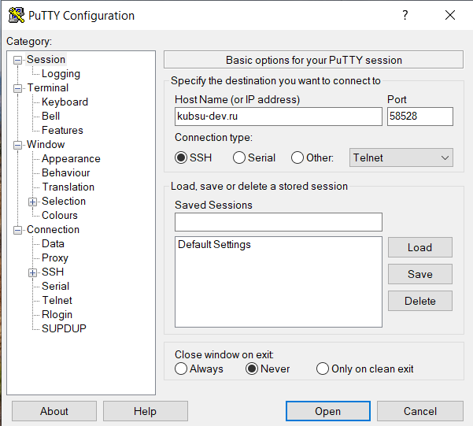
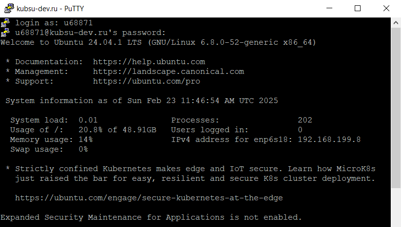
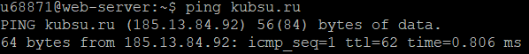
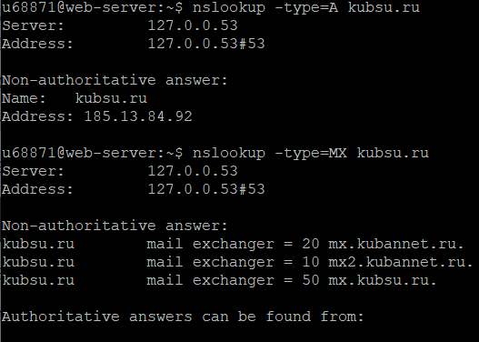
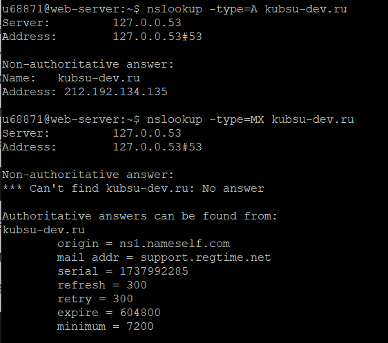
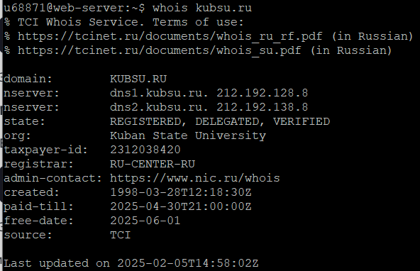
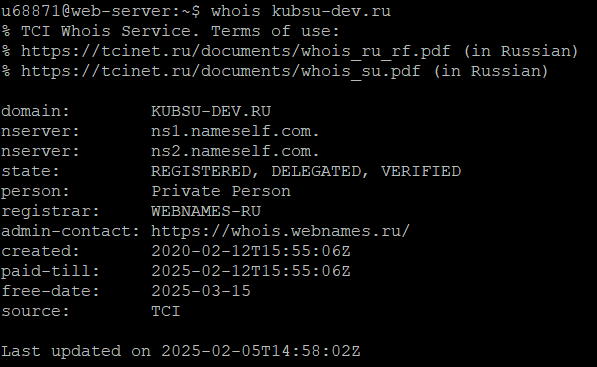
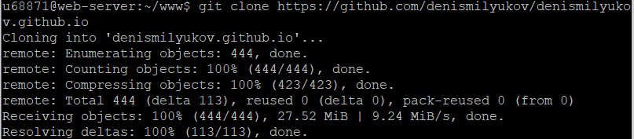
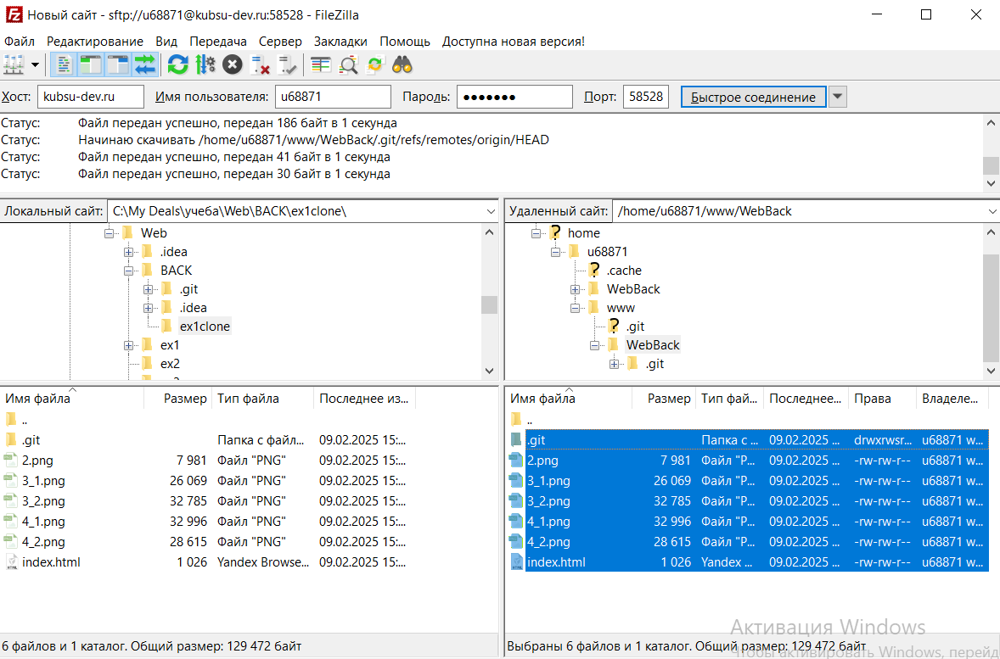

Задание 1
1) С помощью Putty установил соединение с учебным сервером kubsu-dev.ru, подключаясь через порт 58528:

2) С помощью функции ping узнаем ip адрес kubsu.ru

3) С помощью функции nslookup получим A-записи и MX-записи доменов kubsu.ru и kubsu-dev.ru

A-запись домена позволяет узнать, на каком IP-адресе размещен сайт, а MX-запись указывает на серверы, принимающие почту для домена
4) С помощью функции whois узнаем даты регистрации доменов kubsu.ru и kubsu-dev.ru

На соответствующие даты указывает значение параметра created
5) Создал страницу index.html, добавил ее в git и с помощью команды gitclone склонировал репозиторий со страницей в каталог www учебного сервера

6) С помощью FileZilla соединился с учебным сервером и скопировал на локальный компьютер файлы задания
